Strain Gage Based Transducers reference
For certain types of applications, the characteristics of the straight cantilever beam can be improved upon by designs which induce "multiple bending" (reversed curvature) in the beam element. Consider, for instance, a beam which is built-in at both ends, and loaded at the center, as shown below in Fig. A. The figure also includes the bending moment and deflection diagrams, with the deflection greatly exaggerated for clarity. (Strain gage locations are indicated in this and subsequent sketches by short line segments labeled T and C for tension and compression, respectively.) Although this exact configuration is not widely used in commercial load cells, the structural simplification is convenient for illustrative purposes. The potential advantages of the design include intrinsic stiffness and straight-line motion of the point of load application as the beam deflects. The spring element also lends itself to relatively easy installation of a full-bridge strain gage circuit on the upper surface of the beam. Some degree of nonlinearity in output can be expected, however, because of the membrane stress produced in the beam (as it deflects) by the rigidly spaced end supports. Additionally, as for most flexural spring elements, it is necessary to vary the section modulus of the beam along its length if the strain gages are to lie in nearly uniform strain fields.
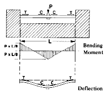
Fig. A
An alternative configuration, closer to some commercial designs, is shown in Fig. B. This spring element has generally the same bending moment distribution and deflection pattern as that in Fig. A and retains essentially the same advantages except that the compliance is twice as great if the dimensions are otherwise the same. Because the end restraints are free to move laterally as the upper and lower beams deflect, the membrane stress is eliminated. Any such motion, however, represents a small change in the moment arm of the applied load, which can manifest itself in the form of nonlinear response if the ratio of the deflection to the beam length is great enough.
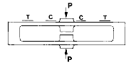
Fig. B
Figure C illustrates a very simple means for producing effectively the same mode of double bending that occurs in either half of the sensing beams in Figs. A and B. In this case, pairs of strain gages are mounted side-by-side on one surface of the beam, or back-to-back on opposite surfaces, to implement a full-bridge circuit. In the form shown here, the design is sensitive to both the location and direction of the applied load. To function properly, the design must incorporate features to assure that loading can occur only along the intended axis.
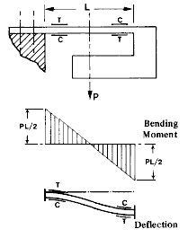
Fig. C
A significantly improved form of the preceding design is shown in Fig. D, where the load sensing is accomplished with two beams, joined by relatively massive sections at both ends. With this configuration, externally applied couples are counteracted by axial forces in the sensing beams, minimizing the effects of off-axis loads. One of the drawbacks of the design, in the proportions shown, is its excessive compliance. The deflection which takes place in the beam segments between gage locations not only increases the compliance of the unit, but also degrades the linearity. Better load cell performance can be obtained by either shortening the beams or increasing the beam thickness between gage sites. Such design changes should be made, of course, with full consideration of the shear loads which must be borne by the element.
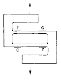
Fig. D
Figure E illustrates a commercial transducer design which represents a simple, elegant, and eminently practical solution to the problem. Although strain gage installation and inspection are more difficult when gages are located inside of a hole, as indicated in the figure, such arrangements are particularly well suited to protecting the gages and sealing them from the environment.
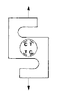
Fig. E
Various forms of the coupled dual-beam arrangement are widely used in load cells for weighing applications. In this case, it is especially advantageous to employ a spring element configuration characterized by an output which is independent of the point of load placement. For small scales, the pan of the scale can be mounted directly on the spring element; and, in well-designed systems, the indicated weight will be the same, regardless of where the weighed object is placed on the pan. In Fig. F, for instance, if analyzed at the level of first-order effects, the output of the gages, when combined by the Wheatstone bridge circuit, is the same whether the load is placed on the scale pan at point A, or B, or C.
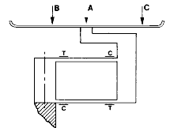
Fig. F
The extraneous couples caused by off-center loads in Fig. F are counterbalanced by a couple composed of equal and opposite axial forces in the upper and lower beams. Although these forces cause corresponding strains in the beams, they do not directly change the output because they are cancelled in the bridge circuit. It is worth noting, however, that for any finite beam deflection, the axial forces affect the moment distributions in the beams, producing distinctly nonlinear behavior. Fortunately, the nonlinearity in the upper beam is opposite and complementary to that in the lower beam. When the strain gages are located as in Fig. F, the two nonlinearities are also cancelled in the bridge circuit. As in all spring elements of this class, there still remains the small nonlinearity due to the decreasing primary moment arm with deflection of the beams.
In general, for any bending spring element, linearity will be enhanced by minimizing the ratio of the deflection (at rated load) to the length of the sensing beam, thus minimizing the change in shape of the element. For scale applications, however, the absolute deflection at rated load is also very important because (unlike the relative deflection) it directly determines the compliance of the element. The spring element and the object being weighed form a mass/spring system, the natural frequency of which varies inversely as the square root of the compliance. The design sketched in Fig. F is unnecessarily compliant. It can be markedly improved, with no loss in sensitivity, by thickening the beams everywhere except at the gage locations. A rather simple and popular way of accomplishing this in commercial load cells is exemplified by the configuration shown in Fig. G, often referred to as the "binocular" design.
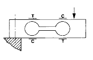
Fig. G
The coupled dual-beam arrangement is recognizably present in many other load cell configurations, such as that in Fig. H. This design has the same characteristic as the preceding dual-beam designs in that the bending moments in the sensing beams are independent of the point of load application. It also provides a feature that is intrinsic to the designs in Figs. C and D; namely, elimination of the axial forces in the beams. If the load is applied to the right of center in the figure, the upper beam is in tension and the lower one in compression. If the load is applied to the left of center, the signs of the forces are reversed. A centrally applied load produces no axial forces in the beam whatsoever.
.
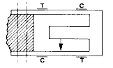
Fig. H
Still another configuration is sketched in Fig. I. In this case, the upper and lower members serve both as flexures and reactions for externally applied couples. Bending moments due to the vertical component of load are sensed in the central measuring beam. The flexures are locally thinned to minimize bending resistance while retaining sufficient cross section to carry the axial forces.
.
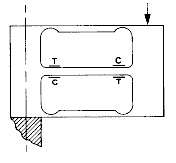
Fig. I
The spring elements discussed above have all been sketched as "two-dimensional" or plane structures, and sometimes in greatly simplified form to illustrate the mechanical principles involved. Spring elements which are optimized for linearity, compliance, maximum uniform strain field at gage locations, etc., often have numerous geometric refinements not shown here. The better designs are usually machined from solid billets of metal as integral structures. These will also have generous fillets at the junctures of connected sections, and may incorporate other features such as tapered sensing beams to maximize the strain gage output.
When a "low-profile" spring element is required, the principles employed in the foregoing planar designs are sometimes adapted to round configurations. Fig. J, for example, illustrates a wheel-like spring element in which the ."spokes" serve as sensing beams. This design is operationally similar to the configuration shown in Fig. A.
..
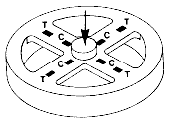
Fig. J
Variations on this theme are numerous. Shown in Fig. K, for instance, is a developed partial view of a slotting arrangement used to form beams in double bending around the periphery of an annular spring element.
.
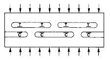
Fig. K